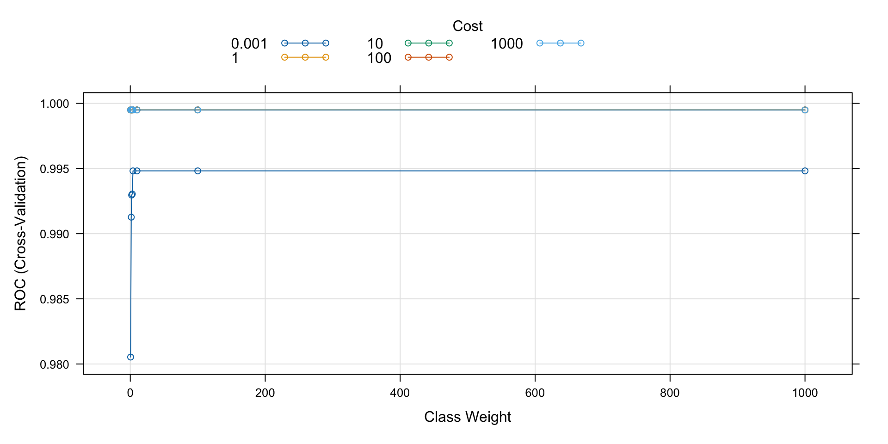

Biomarker prediction in preeclampsia data
May 21, 2024
Abstract
Here we perform a prediction of candidate biomarkers in preeclampsia cfRNA sequencing data.
## Loading required package: ggplot2## Loading required package: lattice1 Importing processed and filtered data
We start by importing the previously filtered and normalized RNA-seq data.
library(SummarizedExperiment)
library(edgeR)
dgeM.filt <- readRDS(file.path("_processed_data", "dgeM.filt.rds"))
seM.filt <- readRDS(file.path("_processed_data", "seM.filt.rds"))
dgeD.filt <- readRDS(file.path("_processed_data", "dgeD.filt.rds"))
seD.filt <- readRDS(file.path("_processed_data", "seD.filt.rds"))
dgeM.filt.training <- readRDS(file.path("_processed_data",
"dgeM.filt.training.rds"))
seM.filt.training <- readRDS(file.path("_processed_data",
"seM.filt.training.rds"))
dgeM.filt.testing <- readRDS(file.path("_processed_data",
"dgeM.filt.testing.rds"))
seM.filt.testing <- readRDS(file.path("_processed_data",
"seM.filt.testing.rds"))
dgeD.filt.subset <- readRDS(file.path("_processed_data",
"dgeD.filt.subset.rds"))
seD.filt.subset <- readRDS(file.path("_processed_data",
"seD.filt.subset.rds"))
DEgenes.trainingM <- readRDS(file.path("_processed_data",
"DEgenes.trainingM.rds"))
DEgenes.testingM <- readRDS(file.path("_processed_data",
"DEgenes.testingM.rds"))
DEgenes.testingD <- readRDS(file.path("_processed_data",
"DEgenes.testingD.rds"))Train-testing subset creation: Intersection between differential expressed genes from training set from Roskams-Hieter et al. (2022) and lowly expressed genes from testing set.
set.seed(111)
intersection.genes <- Reduce(intersect, list(DEgenes.trainingM, rownames(dgeM.filt.testing), rownames(dgeD.filt.subset)))
length(intersection.genes)
[1] 912
#intersection.genes <- intersect(intersect(DEgenes.trainingM, rownames(dgeM.filt.testing)), rownames(dgeD.filt.subset))
#length(intersection.genes)
dgeM.intercept.training <- dgeM.filt.training[intersection.genes,]
dim(dgeM.intercept.training)
[1] 912 244
seM.intercept.training <- seM.filt.training[intersection.genes,]
dim(seM.intercept.training)
[1] 912 244
dgeM.intercept.testing <- dgeM.filt.testing[intersection.genes,]
dim(dgeM.intercept.testing)
[1] 912 89
seM.intercept.testing <- seM.filt.testing[intersection.genes,]
dim(seM.intercept.testing)
[1] 912 89
dgeD.intercept.testing <- dgeD.filt.subset[intersection.genes,]
dim(dgeD.intercept.testing)
[1] 912 76
seD.intercept.testing <- seD.filt.subset[intersection.genes,]
dim(seD.intercept.testing)
[1] 912 761.1 Pregnancy trimesters
Gestational age is used to classify the samples into its corresponding trimester of pregnancy according to NIH: first trimester (week 1 to week 12), second trimester (week 13 to week 28) and third trimester (week 29 to week 40).
1.1.1 Training data
table(as.factor(seM.intercept.training$SamplingGAgroup))
≤12 weeks gestation ≥23 weeks gestation 13-20 weeks gestation
72 84 88 mask <- seM.intercept.training$SamplingGA <= 12
seM.intercept.training$SamplingGAgroup[mask] <- "First trimester"
dgeM.intercept.training$samples$SamplingGAgroup[mask] <- "First trimester"
mask <- seM.intercept.training$SamplingGA %in% c(13:28)
seM.intercept.training$SamplingGAgroup[mask] <- "Second trimester"
dgeM.intercept.training$samples$SamplingGAgroup[mask] <- "Second trimester"
mask <- seM.intercept.training$SamplingGA %in% c(29:40)
seM.intercept.training$SamplingGAgroup[mask] <- "Third trimester"
dgeM.intercept.training$samples$SamplingGAgroup[mask] <- "Third trimester"table(as.factor(seM.intercept.training$SamplingGAgroup))
First trimester Second trimester Third trimester
72 159 13 1.1.2 Testing data 1
table(as.factor(seM.intercept.testing$SamplingGAgroup))
≤12 weeks gestation 13-20 weeks gestation
56 33 mask <- seM.intercept.testing$SamplingGA <= 12
seM.intercept.testing$SamplingGAgroup[mask] <- "First trimester"
dgeM.intercept.testing$samples$SamplingGAgroup[mask] <- "First trimester"
mask <- seM.intercept.testing$SamplingGA %in% c(13:28)
seM.intercept.testing$SamplingGAgroup[mask] <- "Second trimester"
dgeM.intercept.testing$samples$SamplingGAgroup[mask] <- "Second trimester"
mask <- seM.intercept.testing$SamplingGA %in% c(29:40)
seM.intercept.testing$SamplingGAgroup[mask] <- "Third trimester"
dgeM.intercept.testing$samples$SamplingGAgroup[mask] <- "Third trimester"table(as.factor(seM.intercept.testing$SamplingGAgroup))
First trimester Second trimester
56 33 1.1.3 Testing data 2
table(as.factor(seD.intercept.testing$SamplingGAgroup))
1st Trimester 2nd Trimester 3rd Trimester
25 26 25 mask <- seD.intercept.testing$SamplingGA <= 12
seD.intercept.testing$SamplingGAgroup[mask] <- "First trimester"
dgeD.intercept.testing$samples$SamplingGAgroup[mask] <- "First trimester"
mask <- seD.intercept.testing$SamplingGA %in% c(13:28)
seD.intercept.testing$SamplingGAgroup[mask] <- "Second trimester"
dgeD.intercept.testing$samples$SamplingGAgroup[mask] <- "Second trimester"
mask <- seD.intercept.testing$SamplingGA %in% c(29:40)
seD.intercept.testing$SamplingGAgroup[mask] <- "Third trimester"
dgeD.intercept.testing$samples$SamplingGAgroup[mask] <- "Third trimester"table(as.factor(seD.intercept.testing$SamplingGAgroup))
First trimester Second trimester Third trimester
7 44 25 1.2 Dataframes creation
1.2.1 Training data
# SamplingGA or samplingGAgroup?
training.df <- data.frame(Preeclampsia = as.numeric(seM.intercept.training$Preeclampsia),
#SamplingGA = scale(seM.intercept.training$SamplingGA, scale = TRUE, center = TRUE),
SamplingGAgroup = seM.intercept.training$SamplingGAgroup,
scale(t(assays(seM.intercept.training)$logCPM), scale = TRUE, center = TRUE)
)1.2.2 Testing data 1
testing.df1 <- data.frame(Preeclampsia = seM.intercept.testing$Preeclampsia,
#SamplingGA = scale(seM.intercept.testing$SamplingGA, scale = TRUE, center = TRUE),
SamplingGAgroup = seM.intercept.testing$SamplingGAgroup,
scale(t(assays(seM.intercept.testing)$logCPM), scale = TRUE, center = TRUE)
)1.2.3 Testing data 2
testing.df2 <- data.frame(Preeclampsia = seD.intercept.testing$Preeclampsia,
#SamplingGA = scale(seD.intercept.testing$SamplingGA, scale = TRUE, center = TRUE),
SamplingGAgroup = seD.intercept.testing$SamplingGAgroup,
scale(t(assays(seD.intercept.testing)$logCPM), scale = TRUE, center = TRUE)
)library(dataPreparation)
dataPreparation 1.1.1
Type data_preparation_news() to see new features/changes/bug fixes.
Attaching package: 'dataPreparation'
The following object is masked from 'package:Biobase':
description
target_encoding <- build_target_encoding(
training.df,
'SamplingGAgroup',
'Preeclampsia',
functions = "mean",
verbose = TRUE
)
[1] "build_target_encoding: Start to compute encoding for target_encoding according to col: Preeclampsia."
target_encoding
$SamplingGAgroup
SamplingGAgroup Preeclampsia_mean_by_SamplingGAgroup
<char> <num>
1: Second trimester 1.301887
2: First trimester 1.222222
3: Third trimester 1.230769training.df <- as.data.frame(target_encode(training.df, target_encoding, drop = TRUE, verbose = TRUE))
[1] "target_encode: Start to encode columns according to target."
testing.df1 <- as.data.frame(target_encode(testing.df1, target_encoding, drop = TRUE, verbose = TRUE))
[1] "target_encode: Start to encode columns according to target."
testing.df2 <- as.data.frame(target_encode(testing.df2, target_encoding, drop = TRUE, verbose = TRUE))
[1] "target_encode: Start to encode columns according to target."training.df$Preeclampsia <- factor(training.df$Preeclampsia, labels = c('yes', 'no'))2 Performance metrics
Given the application of the current paper, the False Negative Rate (FNR) metric is a particularly relevant metric, since it would imply classifying as healthy an individual with cancer. Therefore, that patients will not receive treatment, which will cause serious consequences. Furthermore, it could also be considered the False Positive Rate (FPR), which results in an undesirable situation where a proportion of healthy individuals are categorized as ill. This would subject a healthy patient to unnecessary treatment and its potential side effects. However, since the expected consequences are not that severe, FNR is prioritized in the analysis.
FNR <- function(proba.pred, truth){
class.pred <- as.numeric(proba.pred > 0.5)
conf <- table(truth, class.pred)
print(conf)
FNR <- conf[2, 1] / sum(conf[2, 1], conf[2, 2])
return(FNR)
}FPR <- function(proba.pred, truth){
class.pred <- as.numeric(proba.pred > 0.5)
conf <- table(truth, class.pred)
print(conf)
FPR <- conf[1, 2] / sum(conf[1, 1], conf[1, 2])
return(FPR)
}3 XGBOOST
modelLookup("xgbTree")
model parameter label forReg forClass
1 xgbTree nrounds # Boosting Iterations TRUE TRUE
2 xgbTree max_depth Max Tree Depth TRUE TRUE
3 xgbTree eta Shrinkage TRUE TRUE
4 xgbTree gamma Minimum Loss Reduction TRUE TRUE
5 xgbTree colsample_bytree Subsample Ratio of Columns TRUE TRUE
6 xgbTree min_child_weight Minimum Sum of Instance Weight TRUE TRUE
7 xgbTree subsample Subsample Percentage TRUE TRUE
probModel
1 TRUE
2 TRUE
3 TRUE
4 TRUE
5 TRUE
6 TRUE
7 TRUE# CV technique which will be passed into the train() function
train_control = trainControl(method = "cv", number = 10, search = "grid",
## Evaluate performance using
## the following function
summaryFunction = twoClassSummary,
allowParallel = TRUE,
# Estimate class probabilities
classProbs=TRUE)
# tuning grid
set.seed(111)
#xgboostGrid <- expand.grid(max_depth = c(3, 5, 7, 9),
# nrounds = (1:10)*20, # number of trees
# eta = c(0.2,0.3,0.4),
# gamma = c(0.5,1),
# subsample = c(0.5, 0.6, 0.7), # common value: between 0.5 and 1
# min_child_weight = c(1,2,3),
# colsample_bytree = c(0.5, 0.6, 0.7) # common value: between 0.5 and 1
# )
xgboostGrid <- expand.grid(max_depth = c(3, 4), nrounds = (1:10)*20, eta = c(0.05, 0.1),gamma = c(0.5,1),subsample = c(0.8),min_child_weight = c(2),colsample_bytree = c(0.8))
#auc = 0.61, 0.52 (fnr =0.95, 0.8) xgboostGrid <- expand.grid(max_depth = c(3, 4, 5, 6), nrounds = (1:10)*20, eta = c(0.2),gamma = c(0.5,1),subsample = c(0.8),min_child_weight = c(2),colsample_bytree = c(0.8)). nrounds = 80, max_depth = 5, eta = 0.2, gamma = 0.5, colsample_bytree = 0.8, min_child_weight = 2 and subsample = 0.8.
# auc = 0.65, 0.56 fnr = 0.82, 0.87. max_depth = c(3, 4). nrounds = 200, max_depth = 4, eta = 0.2, gamma = 0.5, colsample_bytree = 0.8, min_child_weight = 2 and subsample = 0.8.
#nrounds = (1:10)*40 no canvia el auc, fnr
# auc = 0.42, 0.55. eta = c(0.01)
# auc = 0.63, 0.55 fnr= 0.67, 0.87. eta = c(0.05,0.1)
#auc = (0.66, 0.55) fnr=(0.89,0.92). gamma = c(2,3)
# auc = (0.65, 0.56), fnr=0.82, 0.83. gamma = c(1,1.5)
# auc = 0.65, 0.53 fnr= 0.75, 0.95. subsample = c(0.5)
#auc =0.68, 0.50 fnr= 0.82, 0.91. subsample =c(0.6)
#auc=0.68, 0.55 fnr=0.75, 0.95. min_child_weight = c(3)
# colsample_bytree = c(0.8) empitjora
# hyperparaemeter search for XGboost classifier tree model
model = train(Preeclampsia~., data = training.df,
######ALTERNATIVE#######
#x = trainMNX,
#y = trainMNY,
########################
method = "xgbTree",
trControl = train_control,
metric = "ROC",
tuneGrid = xgboostGrid,
verbosity = 0,
verbose = FALSE,
#nthreads = 4 #cores in use
)
print(model)
eXtreme Gradient Boosting
244 samples
913 predictors
2 classes: 'yes', 'no'
No pre-processing
Resampling: Cross-Validated (10 fold)
Summary of sample sizes: 220, 221, 219, 220, 219, 219, ...
Resampling results across tuning parameters:
eta max_depth gamma nrounds ROC Sens Spec
0.05 3 0.5 20 0.8212963 0.8990196 0.4404762
0.05 3 0.5 40 0.8491208 0.8931373 0.3952381
0.05 3 0.5 60 0.8666589 0.9156863 0.3666667
0.05 3 0.5 80 0.8745721 0.9156863 0.3952381
0.05 3 0.5 100 0.8823685 0.9156863 0.4261905
0.05 3 0.5 120 0.8850218 0.9101307 0.4238095
0.05 3 0.5 140 0.8884609 0.9101307 0.4571429
0.05 3 0.5 160 0.8908419 0.9101307 0.4880952
0.05 3 0.5 180 0.8899938 0.9101307 0.5023810
0.05 3 0.5 200 0.8932228 0.9101307 0.4880952
0.05 3 1.0 20 0.8332789 0.9098039 0.3833333
0.05 3 1.0 40 0.8507314 0.9098039 0.3809524
0.05 3 1.0 60 0.8573763 0.9156863 0.4119048
0.05 3 1.0 80 0.8635543 0.9156863 0.4142857
0.05 3 1.0 100 0.8674759 0.9209150 0.4142857
0.05 3 1.0 120 0.8762838 0.9267974 0.4452381
0.05 3 1.0 140 0.8752490 0.9156863 0.4595238
0.05 3 1.0 160 0.8746110 0.9098039 0.4595238
0.05 3 1.0 180 0.8737706 0.9098039 0.4595238
0.05 3 1.0 200 0.8737706 0.9153595 0.5023810
0.05 4 0.5 20 0.8341036 0.9098039 0.4309524
0.05 4 0.5 40 0.8534547 0.9264706 0.3714286
0.05 4 0.5 60 0.8600529 0.9267974 0.3523810
0.05 4 0.5 80 0.8710162 0.9320261 0.3500000
0.05 4 0.5 100 0.8742919 0.9323529 0.3642857
0.05 4 0.5 120 0.8764395 0.9379085 0.3952381
0.05 4 0.5 140 0.8821273 0.9323529 0.3809524
0.05 4 0.5 160 0.8846483 0.9323529 0.4095238
0.05 4 0.5 180 0.8853641 0.9323529 0.4404762
0.05 4 0.5 200 0.8870059 0.9323529 0.4404762
0.05 4 1.0 20 0.8546374 0.9267974 0.4142857
0.05 4 1.0 40 0.8538982 0.9379085 0.4142857
0.05 4 1.0 60 0.8694289 0.9379085 0.4071429
0.05 4 1.0 80 0.8795907 0.9379085 0.4404762
0.05 4 1.0 100 0.8805711 0.9323529 0.4738095
0.05 4 1.0 120 0.8835279 0.9323529 0.4738095
0.05 4 1.0 140 0.8839791 0.9323529 0.4880952
0.05 4 1.0 160 0.8841659 0.9382353 0.4857143
0.05 4 1.0 180 0.8840336 0.9382353 0.5023810
0.05 4 1.0 200 0.8839013 0.9382353 0.4857143
0.10 3 0.5 20 0.8334890 0.8875817 0.4285714
0.10 3 0.5 40 0.8655929 0.9101307 0.4261905
0.10 3 0.5 60 0.8803299 0.9101307 0.4380952
0.10 3 0.5 80 0.8843059 0.9156863 0.4666667
0.10 3 0.5 100 0.8884609 0.9156863 0.4976190
0.10 3 0.5 120 0.8913943 0.9156863 0.5142857
0.10 3 0.5 140 0.8929894 0.9101307 0.5309524
0.10 3 0.5 160 0.8913554 0.9101307 0.5452381
0.10 3 0.5 180 0.8949502 0.9101307 0.5309524
0.10 3 0.5 200 0.8959306 0.9101307 0.5452381
0.10 3 1.0 20 0.8627918 0.9379085 0.3523810
0.10 3 1.0 40 0.8845627 0.9323529 0.3809524
0.10 3 1.0 60 0.8851463 0.9212418 0.3952381
0.10 3 1.0 80 0.8915577 0.9326797 0.3952381
0.10 3 1.0 100 0.8942266 0.9326797 0.4095238
0.10 3 1.0 120 0.8917134 0.9382353 0.4238095
0.10 3 1.0 140 0.8901261 0.9382353 0.4523810
0.10 3 1.0 160 0.8926393 0.9382353 0.4357143
0.10 3 1.0 180 0.8942655 0.9271242 0.4357143
0.10 3 1.0 200 0.8950124 0.9326797 0.4357143
0.10 4 0.5 20 0.8470121 0.9094771 0.3857143
0.10 4 0.5 40 0.8772876 0.9372549 0.4166667
0.10 4 0.5 60 0.8773420 0.9437908 0.4904762
0.10 4 0.5 80 0.8939698 0.9437908 0.5047619
0.10 4 0.5 100 0.8955571 0.9437908 0.4857143
0.10 4 0.5 120 0.9013850 0.9493464 0.5166667
0.10 4 0.5 140 0.9002179 0.9437908 0.5333333
0.10 4 0.5 160 0.9004046 0.9437908 0.5023810
0.10 4 0.5 180 0.9004046 0.9549020 0.5333333
0.10 4 0.5 200 0.9019919 0.9549020 0.5333333
0.10 4 1.0 20 0.8380330 0.8931373 0.4571429
0.10 4 1.0 40 0.8529256 0.9156863 0.4714286
0.10 4 1.0 60 0.8558357 0.9271242 0.4428571
0.10 4 1.0 80 0.8677482 0.9104575 0.4571429
0.10 4 1.0 100 0.8662932 0.9215686 0.4571429
0.10 4 1.0 120 0.8696001 0.9160131 0.4571429
0.10 4 1.0 140 0.8711874 0.9160131 0.4714286
0.10 4 1.0 160 0.8703937 0.9160131 0.4571429
0.10 4 1.0 180 0.8703081 0.9160131 0.4880952
0.10 4 1.0 200 0.8726891 0.9160131 0.5023810
Tuning parameter 'colsample_bytree' was held constant at a value of 0.8
Tuning parameter 'min_child_weight' was held constant at a value of 2
Tuning parameter 'subsample' was held constant at a value of 0.8
ROC was used to select the optimal model using the largest value.
The final values used for the model were nrounds = 200, max_depth = 4, eta
= 0.1, gamma = 0.5, colsample_bytree = 0.8, min_child_weight = 2 and
subsample = 0.8.# CANVIAR $ PRECLAMPSIA ALS CHUNKS DELS ALTRES MÈTODES PERQUÈ S'ENTEN MILLOR
#predict on test data
pred1.y <- predict(model, testing.df1, type = "prob")[,2]
# out of sample performance metrics
test1.y <- as.numeric(testing.df1$Preeclampsia)-1
pROC::auc(test1.y, pred1.y)
Setting levels: control = 0, case = 1
Setting direction: controls < cases
Area under the curve: 0.6364
FNR(pred1.y, test1.y)
class.pred
truth 0 1
0 52 9
1 19 9
[1] 0.6785714
FPR(pred1.y, test1.y)
class.pred
truth 0 1
0 52 9
1 19 9
[1] 0.147541# Add to output
res.testing1[1, ] <- c(pROC::auc(test1.y, pred1.y), FNR(pred1.y, test1.y), FPR(pred1.y, test1.y))
Setting levels: control = 0, case = 1
Setting direction: controls < cases
rownames(res.testing1)[nrow(res.testing1)] <- 'XGBOOST'#predict on test data
pred2.y <- predict(model, testing.df2, type = "prob")[,2]
# out of sample performance metrics
test2.y <- as.numeric(testing.df2$Preeclampsia)-1
pROC::auc(test2.y, pred2.y)
Setting levels: control = 0, case = 1
Setting direction: controls > cases
Area under the curve: 0.5553
FNR(pred2.y, test2.y)
class.pred
truth 0 1
0 43 9
1 21 3
[1] 0.875
FPR(pred2.y, test2.y)
class.pred
truth 0 1
0 43 9
1 21 3
[1] 0.1730769# Add to output
res.testing2[1, ] <- c(pROC::auc(test2.y, pred2.y), FNR(pred2.y, test2.y), FPR(pred2.y, test2.y))
Setting levels: control = 0, case = 1
Setting direction: controls > cases
class.pred
truth 0 1
0 43 9
1 21 3
class.pred
truth 0 1
0 43 9
1 21 3
rownames(res.testing2)[nrow(res.testing2)] <- 'XGBOOST'4 Class imbalance
Class imbalance is identified since there are 27.5% normotensive and 72.5% preeclampsia pregnancies. Unbalanced problems should be addressed when applying SVM, since it aims to separate the space into two parts.
remotes::install_github("cran/DMwR")
Using GitHub PAT from the git credential store.
Skipping install of 'DMwR' from a github remote, the SHA1 (6fd4f0cd) has not changed since last install.
Use `force = TRUE` to force installationlibrary(DMwR)
Loading required package: grid
Registered S3 method overwritten by 'quantmod':
method from
as.zoo.data.frame zoo
set.seed(111)
resampled.training.df <- SMOTE(Preeclampsia ~ ., training.df, perc.over = 110)
table(resampled.training.df$Preeclampsia)
yes no
134 134 reweight <- function(pi, q1, r1) {
r0 <- 1 - r1
q0 <- 1 - q1
tot <- pi * (q1 / r1) + (1 - pi) * (q0 / r0)
w <- pi * (q1 / r1) / tot
return(w)
}5 SVM models
5.1 svmLinearWeights (linear kernel + class weights)
modelLookup("svmLinearWeights")
model parameter label forReg forClass probModel
1 svmLinearWeights cost Cost FALSE TRUE TRUE
2 svmLinearWeights weight Class Weight FALSE TRUE TRUEtrain_control = trainControl(method = "cv", number = 10, search = "grid",
## Evaluate performance using
## the following function
summaryFunction = twoClassSummary,
allowParallel = TRUE,
# Estimate class probabilities
classProbs=TRUE)
set.seed(50)
# Customzing the tuning grid
svmgrid <- expand.grid(cost = c(0.001, 1, 10, 100, 1000), weight = c(0.5,1.5,2,3,4, 10, 100, 1000))
# auc = 0.58, 0.48 cost = 0.01 and weight = 3. cost = c(0.01, 0.05,0.5,1,3, 5, 10), weight = c(0.01, 0.05,0.5,1,3,5,10)
# auc = 0.57, 0.48, fnr = 0.92, 0.83. cost = 0.05 and weight = 0.5. weight = c(0.01, 0.05,0.5)
# auc = 0.64, 0.52. fnr=0.71,0.75. cost = c(0.001, 0.01, 0.1, 1, 10, 100, 1000), weight = c(0.001, 0.01, 0.1, 1, 10, 100, 1000). optimal: cost 0.01, weight 1
# auc = 0.64, 0.52 fnr=0.53, 0.75 (si poso un weight menor empitjora). svmgrid <- expand.grid(cost = c(0.008, 0.01, 0.02, 0.03, 0.04, 0.05, 0.1), weight = c(7,8,9,10,11,12))
# auc = 0.64, 0.52 fnr=0.53, 0.75. cost = c(0.001, 1, 10, 100, 1000), weight = c(0.5,1.5,2,3,4, 10, 100, 1000)). cost = 1, weight =0.5
# training a svm classifier with liearn kernel model while tuning parameters
model = train(Preeclampsia~., data = resampled.training.df,
method = "svmLinearWeights",
trControl = train_control,
metric = "ROC",
tuneGrid = svmgrid)
# summarizing the results
print(model)
Linear Support Vector Machines with Class Weights
268 samples
913 predictors
2 classes: 'yes', 'no'
No pre-processing
Resampling: Cross-Validated (10 fold)
Summary of sample sizes: 240, 242, 240, 240, 242, 242, ...
Resampling results across tuning parameters:
cost weight ROC Sens Spec
1e-03 0.5 0.9805338 0.9318681 0.8956044
1e-03 1.5 0.9912662 0.9016484 1.0000000
1e-03 2.0 0.9929598 0.9016484 1.0000000
1e-03 3.0 0.9930413 0.8945055 1.0000000
1e-03 4.0 0.9948164 0.8873626 1.0000000
1e-03 10.0 0.9948164 0.8873626 1.0000000
1e-03 100.0 0.9948164 0.8873626 1.0000000
1e-03 1000.0 0.9948164 0.8873626 1.0000000
1e+00 0.5 0.9994898 0.9170330 1.0000000
1e+00 1.5 0.9994898 0.9170330 1.0000000
1e+00 2.0 0.9994898 0.9170330 1.0000000
1e+00 3.0 0.9994898 0.9170330 1.0000000
1e+00 4.0 0.9994898 0.9170330 1.0000000
1e+00 10.0 0.9994898 0.9170330 1.0000000
1e+00 100.0 0.9994898 0.9170330 1.0000000
1e+00 1000.0 0.9994898 0.9170330 1.0000000
1e+01 0.5 0.9994898 0.9170330 1.0000000
1e+01 1.5 0.9994898 0.9170330 1.0000000
1e+01 2.0 0.9994898 0.9170330 1.0000000
1e+01 3.0 0.9994898 0.9170330 1.0000000
1e+01 4.0 0.9994898 0.9170330 1.0000000
1e+01 10.0 0.9994898 0.9170330 1.0000000
1e+01 100.0 0.9994898 0.9170330 1.0000000
1e+01 1000.0 0.9994898 0.9170330 1.0000000
1e+02 0.5 0.9994898 0.9170330 1.0000000
1e+02 1.5 0.9994898 0.9170330 1.0000000
1e+02 2.0 0.9994898 0.9170330 1.0000000
1e+02 3.0 0.9994898 0.9170330 1.0000000
1e+02 4.0 0.9994898 0.9170330 1.0000000
1e+02 10.0 0.9994898 0.9170330 1.0000000
1e+02 100.0 0.9994898 0.9170330 1.0000000
1e+02 1000.0 0.9994898 0.9170330 1.0000000
1e+03 0.5 0.9994898 0.9170330 1.0000000
1e+03 1.5 0.9994898 0.9170330 1.0000000
1e+03 2.0 0.9994898 0.9170330 1.0000000
1e+03 3.0 0.9994898 0.9170330 1.0000000
1e+03 4.0 0.9994898 0.9170330 1.0000000
1e+03 10.0 0.9994898 0.9170330 1.0000000
1e+03 100.0 0.9994898 0.9170330 1.0000000
1e+03 1000.0 0.9994898 0.9170330 1.0000000
ROC was used to select the optimal model using the largest value.
The final values used for the model were cost = 1 and weight = 0.5.plot(model)
#predict on test data
pred1.y <- predict(model, testing.df1, type = "prob")[,2]
q1 <- sum(training.df$Preeclampsia == "yes") / length(training.df$Preeclampsia)
r1 <- sum(resampled.training.df$Preeclampsia == "yes") / length(resampled.training.df$Preeclampsia)
reweighted.probs1 <- sapply(pred1.y, reweight, q1 = q1, r1 = r1)
# out of sample performance metrics
test1.y <- as.numeric(testing.df1$Preeclampsia) -1
pROC::auc(test1.y, reweighted.probs1)
Setting levels: control = 0, case = 1
Setting direction: controls < cases
Area under the curve: 0.603
FNR(reweighted.probs1, test1.y)
class.pred
truth 0 1
0 50 11
1 20 8
[1] 0.7142857
FPR(reweighted.probs1, test1.y)
class.pred
truth 0 1
0 50 11
1 20 8
[1] 0.1803279# Add to output
res.testing1 <- rbind.data.frame(res.testing1, c(pROC::auc(test1.y, reweighted.probs1), FNR(reweighted.probs1, test1.y), FPR(reweighted.probs1, test1.y)))
Setting levels: control = 0, case = 1
Setting direction: controls < cases
rownames(res.testing1)[nrow(res.testing1)] <- 'SVMLinear'#predict on test data
pred2.y <- predict(model, testing.df2, type = "prob")[,2]
q1 <- sum(training.df$Preeclampsia == "yes") / length(training.df$Preeclampsia)
r1 <- sum(resampled.training.df$Preeclampsia == "yes") / length(resampled.training.df$Preeclampsia)
reweighted.probs2 <- sapply(pred2.y, reweight, q1 = q1, r1 = r1)
# out of sample performance metrics
test2.y <- as.numeric(testing.df2$Preeclampsia) -1
pROC::auc(test2.y, reweighted.probs2)
Setting levels: control = 0, case = 1
Setting direction: controls < cases
Area under the curve: 0.5369
FNR(reweighted.probs2, test2.y)
class.pred
truth 0 1
0 39 13
1 18 6
[1] 0.75
FPR(reweighted.probs2, test2.y)
class.pred
truth 0 1
0 39 13
1 18 6
[1] 0.25# Add to output
res.testing2 <- rbind.data.frame(res.testing2, c(pROC::auc(test2.y, reweighted.probs2), FNR(reweighted.probs2, test2.y), FPR(reweighted.probs2, test2.y)))
Setting levels: control = 0, case = 1
Setting direction: controls < cases
rownames(res.testing2)[nrow(res.testing2)] <- 'SVMLinear'5.2 svmRadial (Support Vector Machines with Radial Basis Function Kernel)
modelLookup("svmRadial")
model parameter label forReg forClass probModel
1 svmRadial sigma Sigma TRUE TRUE TRUE
2 svmRadial C Cost TRUE TRUE TRUEtrain_control = trainControl(method = "cv", number = 10, search = "grid",
## Evaluate performance using
## the following function
summaryFunction = twoClassSummary,
allowParallel = TRUE,
# Estimate class probabilities
classProbs=TRUE)
set.seed(50)
# Customzing the tuning grid
#svmgrid <- expand.grid(sigma = c(0.1,0.2,1),
# C = c(1.2,1.4,1.6,1.8))
svmgrid <- expand.grid(sigma=c(0.01, 0.05,0.5,1,3, 5, 10), C = c(0.01, 0.05,0.5,1,3,5,10))
# training a svm with rbf kernel classifier model while tuning parameters
model = train(Preeclampsia~., data = training.df,
method = "svmRadial",
trControl = train_control,
metric = "ROC",
tuneGrid = svmgrid)
maximum number of iterations reached 0.005085953 0.004912862maximum number of iterations reached 0.0008677703 0.000832775maximum number of iterations reached 3.150206e-05 3.090768e-05maximum number of iterations reached 0.0003868091 0.0003138042maximum number of iterations reached 0.0008807736 0.0005480175maximum number of iterations reached 0.00155425 0.0007002543maximum number of iterations reached 0.001466033 0.0006606472maximum number of iterations reached 0.001183746 0.0005340235maximum number of iterations reached 0.004840323 0.004736807maximum number of iterations reached -1.398964e-05 -1.393598e-05maximum number of iterations reached -2.221408e-05 -2.212888e-05maximum number of iterations reached -2.221408e-05 -2.212888e-05maximum number of iterations reached -2.221408e-05 -2.212888e-05maximum number of iterations reached -2.221408e-05 -2.212888e-05maximum number of iterations reached -2.221408e-05 -2.212888e-05maximum number of iterations reached 0.0002546347 0.0002472361maximum number of iterations reached -6.190969e-05 -6.072591e-05maximum number of iterations reached -0.0001014294 -9.949378e-05maximum number of iterations reached -0.0001014294 -9.949378e-05maximum number of iterations reached -0.0001014294 -9.949378e-05maximum number of iterations reached -0.0001014294 -9.949378e-05maximum number of iterations reached -0.0001014294 -9.949378e-05maximum number of iterations reached 0.00559799 0.005434535maximum number of iterations reached 0.001012567 0.0009730651maximum number of iterations reached 3.826369e-05 3.754603e-05maximum number of iterations reached -1.572825e-05 -1.543337e-05maximum number of iterations reached -1.572825e-05 -1.543337e-05maximum number of iterations reached -1.572825e-05 -1.543337e-05maximum number of iterations reached -1.572825e-05 -1.543337e-05maximum number of iterations reached -1.572825e-05 -1.543337e-05maximum number of iterations reached -3.16075e-05 -2.569235e-05maximum number of iterations reached -3.16075e-05 -2.569235e-05maximum number of iterations reached -3.16075e-05 -2.569235e-05maximum number of iterations reached -3.16075e-05 -2.569235e-05maximum number of iterations reached -3.16075e-05 -2.569235e-05maximum number of iterations reached 0.005660414 0.005503007maximum number of iterations reached 0.0002917675 0.0002830705maximum number of iterations reached -1.572825e-05 -1.543337e-05maximum number of iterations reached -1.572825e-05 -1.543337e-05maximum number of iterations reached -1.572825e-05 -1.543337e-05maximum number of iterations reached -1.572825e-05 -1.543337e-05maximum number of iterations reached -1.572825e-05 -1.543337e-05maximum number of iterations reached 1.921977e-05 1.561166e-05maximum number of iterations reached -3.16075e-05 -2.569235e-05maximum number of iterations reached -3.16075e-05 -2.569235e-05maximum number of iterations reached -3.16075e-05 -2.569235e-05maximum number of iterations reached -3.16075e-05 -2.569235e-05maximum number of iterations reached -3.16075e-05 -2.569235e-05maximum number of iterations reached 0.004839824 0.004716261maximum number of iterations reached 0.00074771 0.0007191083maximum number of iterations reached 4.241917e-05 4.161882e-05maximum number of iterations reached 0.0004561316 0.0003700417maximum number of iterations reached 0.001029884 0.0006407351maximum number of iterations reached 0.001706981 0.0007686752maximum number of iterations reached 0.001149766 0.0005185585maximum number of iterations reached 0.001569253 0.0007069515maximum number of iterations reached 0.005260818 0.005098733maximum number of iterations reached -3.250817e-05 -3.238428e-05maximum number of iterations reached -3.36868e-05 -3.355843e-05maximum number of iterations reached -3.36868e-05 -3.355843e-05maximum number of iterations reached -3.36868e-05 -3.355843e-05maximum number of iterations reached -3.36868e-05 -3.355843e-05maximum number of iterations reached -3.36868e-05 -3.355843e-05maximum number of iterations reached 0.0004120599 0.0003986718maximum number of iterations reached -0.0001247676 -0.000122412maximum number of iterations reached -0.0001457005 -0.0001429539maximum number of iterations reached -0.0001457005 -0.0001429539maximum number of iterations reached -0.0001457005 -0.0001429539maximum number of iterations reached -0.0001457005 -0.0001429539maximum number of iterations reached -0.0001457005 -0.0001429539maximum number of iterations reached 0.005375412 0.005221593maximum number of iterations reached -1.357325e-05 -1.352119e-05maximum number of iterations reached -2.221408e-05 -2.212888e-05maximum number of iterations reached -2.221408e-05 -2.212888e-05maximum number of iterations reached -2.221408e-05 -2.212888e-05maximum number of iterations reached -2.221408e-05 -2.212888e-05maximum number of iterations reached -2.221408e-05 -2.212888e-05maximum number of iterations reached 0.0001432689 0.0001395281maximum number of iterations reached -6.20509e-05 -6.086446e-05maximum number of iterations reached -0.0001014294 -9.949378e-05maximum number of iterations reached -0.0001014294 -9.949378e-05maximum number of iterations reached -0.0001014294 -9.949378e-05maximum number of iterations reached -0.0001014294 -9.949378e-05maximum number of iterations reached -0.0001014294 -9.949378e-05maximum number of iterations reached 0.005302942 0.005076363maximum number of iterations reached 0.0007759906 0.0007423361maximum number of iterations reached 1.119617e-05 1.09849e-05maximum number of iterations reached 0.0005104595 0.000414093maximum number of iterations reached 0.0009274126 0.0005768344maximum number of iterations reached 0.001561103 0.0007024085maximum number of iterations reached 0.001560398 0.0007021101maximum number of iterations reached 0.001240482 0.000558807maximum number of iterations reached 0.00517139 0.005018087maximum number of iterations reached 0.0007208185 0.0006966709maximum number of iterations reached 1.803187e-05 1.769164e-05maximum number of iterations reached 0.0001639171 0.0001329891maximum number of iterations reached 0.0005047085 0.0003142364maximum number of iterations reached 0.0005933219 0.0002681782maximum number of iterations reached 0.0003993018 0.0001805021maximum number of iterations reached 0.0003386159 0.0001530691maximum number of iterations reached 0.0055647 0.005337792maximum number of iterations reached 0.001232164 0.001181919maximum number of iterations reached 1.241315e-05 1.217894e-05maximum number of iterations reached 5.985117e-05 4.855806e-05maximum number of iterations reached 0.000646699 0.0004026221maximum number of iterations reached 0.0006579905 0.0002973893maximum number of iterations reached 0.0002783006 0.0001258019maximum number of iterations reached 0.001012791 0.0004576585maximum number of iterations reached 0.004990477 0.004844777
# summarizing the results
print(model)
Support Vector Machines with Radial Basis Function Kernel
244 samples
913 predictors
2 classes: 'yes', 'no'
No pre-processing
Resampling: Cross-Validated (10 fold)
Summary of sample sizes: 219, 220, 220, 220, 219, 221, ...
Resampling results across tuning parameters:
sigma C ROC Sens Spec
0.01 0.01 0.8755291 1.0000000 0.05952381
0.01 0.05 0.8712496 0.9771242 0.22142857
0.01 0.50 0.8712496 0.9591503 0.26428571
0.01 1.00 0.8712496 0.9712418 0.23571429
0.01 3.00 0.8733894 0.9826797 0.19285714
0.01 5.00 0.8733894 0.9888889 0.22142857
0.01 10.00 0.8733894 0.9944444 0.20714286
0.05 0.01 0.6385465 1.0000000 0.00000000
0.05 0.05 0.5657952 1.0000000 0.00000000
0.05 0.50 0.6498055 1.0000000 0.00000000
0.05 1.00 0.5326914 1.0000000 0.00000000
0.05 3.00 0.6424992 1.0000000 0.00000000
0.05 5.00 0.5717009 1.0000000 0.00000000
0.05 10.00 0.6466737 1.0000000 0.00000000
0.50 0.01 0.5000000 1.0000000 0.00000000
0.50 0.05 0.5000000 1.0000000 0.00000000
0.50 0.50 0.5000000 1.0000000 0.00000000
0.50 1.00 0.5000000 1.0000000 0.00000000
0.50 3.00 0.5000000 1.0000000 0.00000000
0.50 5.00 0.5000000 1.0000000 0.00000000
0.50 10.00 0.5000000 1.0000000 0.00000000
1.00 0.01 0.5000000 1.0000000 0.00000000
1.00 0.05 0.5000000 1.0000000 0.00000000
1.00 0.50 0.5000000 1.0000000 0.00000000
1.00 1.00 0.5000000 1.0000000 0.00000000
1.00 3.00 0.5000000 1.0000000 0.00000000
1.00 5.00 0.5000000 1.0000000 0.00000000
1.00 10.00 0.5000000 1.0000000 0.00000000
3.00 0.01 0.5000000 1.0000000 0.00000000
3.00 0.05 0.5000000 1.0000000 0.00000000
3.00 0.50 0.5000000 1.0000000 0.00000000
3.00 1.00 0.5000000 1.0000000 0.00000000
3.00 3.00 0.5000000 1.0000000 0.00000000
3.00 5.00 0.5000000 1.0000000 0.00000000
3.00 10.00 0.5000000 1.0000000 0.00000000
5.00 0.01 0.5000000 1.0000000 0.00000000
5.00 0.05 0.5000000 1.0000000 0.00000000
5.00 0.50 0.5000000 1.0000000 0.00000000
5.00 1.00 0.5000000 1.0000000 0.00000000
5.00 3.00 0.5000000 1.0000000 0.00000000
5.00 5.00 0.5000000 1.0000000 0.00000000
5.00 10.00 0.5000000 1.0000000 0.00000000
10.00 0.01 0.5000000 1.0000000 0.00000000
10.00 0.05 0.5000000 1.0000000 0.00000000
10.00 0.50 0.5000000 1.0000000 0.00000000
10.00 1.00 0.5000000 1.0000000 0.00000000
10.00 3.00 0.5000000 1.0000000 0.00000000
10.00 5.00 0.5000000 1.0000000 0.00000000
10.00 10.00 0.5000000 1.0000000 0.00000000
ROC was used to select the optimal model using the largest value.
The final values used for the model were sigma = 0.01 and C = 0.01.plot(model)
#predict on test data
pred1.y <- predict(model, testing.df1, type = "prob")[,2]
q1 <- sum(training.df$Preeclampsia == "yes") / length(training.df$Preeclampsia)
r1 <- sum(resampled.training.df$Preeclampsia == "yes") / length(resampled.training.df$Preeclampsia)
reweighted.probs1 <- sapply(pred1.y, reweight, q1 = q1, r1 = r1)
# out of sample performance metrics
test1.y <- as.numeric(testing.df1[, 1])-1
pROC::auc(test1.y, reweighted.probs1)
Setting levels: control = 0, case = 1
Setting direction: controls < cases
Area under the curve: 0.6071
FNR(reweighted.probs1, test1.y)
class.pred
truth 0 1
0 6 55
1 1 27
[1] 0.03571429
FPR(reweighted.probs1, test1.y)
class.pred
truth 0 1
0 6 55
1 1 27
[1] 0.9016393# Add to output
res.testing1 <- rbind.data.frame(res.testing1, c(pROC::auc(test1.y, reweighted.probs1), FNR(reweighted.probs1, test1.y), FPR(reweighted.probs1, test1.y)))
Setting levels: control = 0, case = 1
Setting direction: controls < cases
rownames(res.testing1)[nrow(res.testing1)] <- 'SVMRadial'#predict on test data
pred2.y <- predict(model, testing.df2, type = "prob")[,2]
q1 <- sum(training.df$Preeclampsia == "yes") / length(training.df$Preeclampsia)
r1 <- sum(resampled.training.df$Preeclampsia == "yes") / length(resampled.training.df$Preeclampsia)
reweighted.probs2 <- sapply(pred2.y, reweight, q1 = q1, r1 = r1)
# out of sample performance metrics
test2.y <- as.numeric(testing.df2$Preeclampsia) -1
pROC::auc(test2.y, reweighted.probs2)
Setting levels: control = 0, case = 1
Setting direction: controls > cases
Area under the curve: 0.5553
FNR(reweighted.probs2, test2.y)
class.pred
truth 0 1
0 2 50
1 1 23
[1] 0.04166667
FPR(reweighted.probs2, test2.y)
class.pred
truth 0 1
0 2 50
1 1 23
[1] 0.9615385# Add to output
res.testing2 <- rbind.data.frame(res.testing2, c(pROC::auc(test2.y, reweighted.probs2), FNR(reweighted.probs2, test2.y), FPR(reweighted.probs2, test2.y)))
Setting levels: control = 0, case = 1
Setting direction: controls > cases
rownames(res.testing2)[nrow(res.testing2)] <- 'SVMRadial'5.3 svmPoly (Support Vector Machines with Polynomial Kernel)
modelLookup("svmPoly")
model parameter label forReg forClass probModel
1 svmPoly degree Polynomial Degree TRUE TRUE TRUE
2 svmPoly scale Scale TRUE TRUE TRUE
3 svmPoly C Cost TRUE TRUE TRUEtrain_control = trainControl(method = "cv", number = 10, search = "grid",
## Evaluate performance using
## the following function
summaryFunction = twoClassSummary,
allowParallel = TRUE,
# Estimate class probabilities
classProbs=TRUE)
set.seed(111)
svmgrid <- expand.grid(degree = c(3,4,5),
scale = c(3, 5),
C = c(0.5,1,3,5,10)
)
# training a svm with poly kernel classifier tree model while tuning parameters
model = train(Preeclampsia~., data = training.df,
method = "svmPoly",
trControl = train_control,
metric = "ROC",
tuneGrid = svmgrid)
print(model)
Support Vector Machines with Polynomial Kernel
244 samples
913 predictors
2 classes: 'yes', 'no'
No pre-processing
Resampling: Cross-Validated (10 fold)
Summary of sample sizes: 220, 221, 219, 220, 219, 219, ...
Resampling results across tuning parameters:
degree scale C ROC Sens Spec
3 3 0.5 0.9129474 0.9486928 0.58095238
3 3 1.0 0.9129474 0.9486928 0.58095238
3 3 3.0 0.9129474 0.9486928 0.58095238
3 3 5.0 0.9129474 0.9431373 0.56428571
3 3 10.0 0.9129474 0.9431373 0.58095238
3 5 0.5 0.9129474 0.9486928 0.56666667
3 5 1.0 0.9129474 0.9486928 0.56666667
3 5 3.0 0.9129474 0.9431373 0.58095238
3 5 5.0 0.9129474 0.9486928 0.56666667
3 5 10.0 0.9129474 0.9486928 0.58333333
4 3 0.5 0.6297775 1.0000000 0.00000000
4 3 1.0 0.6297775 0.9944444 0.00000000
4 3 3.0 0.5853330 0.9941176 0.00000000
4 3 5.0 0.6345394 1.0000000 0.00000000
4 3 10.0 0.5853330 0.9885621 0.00000000
4 5 0.5 0.6297775 0.9944444 0.00000000
4 5 1.0 0.6059679 0.9885621 0.01666667
4 5 3.0 0.5155073 0.9941176 0.00000000
4 5 5.0 0.5776766 1.0000000 0.00000000
4 5 10.0 0.6297775 0.9941176 0.00000000
5 3 0.5 0.8371771 0.9830065 0.23809524
5 3 1.0 0.8371771 0.9830065 0.25238095
5 3 3.0 0.8371771 0.9830065 0.19285714
5 3 5.0 0.8371771 0.9718954 0.22380952
5 3 10.0 0.8371771 0.9774510 0.25714286
5 5 0.5 0.8371771 0.9830065 0.19285714
5 5 1.0 0.8371771 0.9774510 0.29761905
5 5 3.0 0.8371771 0.9774510 0.25238095
5 5 5.0 0.8371771 0.9830065 0.28333333
5 5 10.0 0.8371771 0.9774510 0.26904762
ROC was used to select the optimal model using the largest value.
The final values used for the model were degree = 3, scale = 3 and C = 0.5.plot(model)
#predict on test data
pred1.y <- predict(model, testing.df1, type = "prob")[,2]
q1 <- sum(training.df$Preeclampsia == "yes") / length(training.df$Preeclampsia)
r1 <- sum(resampled.training.df$Preeclampsia == "yes") / length(resampled.training.df$Preeclampsia)
reweighted.probs1 <- sapply(pred1.y, reweight, q1 = q1, r1 = r1)
# out of sample performance metrics
test1.y <- as.numeric(testing.df1[, 1])-1
pROC::auc(test1.y, reweighted.probs1)
Setting levels: control = 0, case = 1
Setting direction: controls < cases
Area under the curve: 0.6393
FNR(reweighted.probs1, test1.y)
class.pred
truth 0 1
0 41 20
1 15 13
[1] 0.5357143
FPR(reweighted.probs1, test1.y)
class.pred
truth 0 1
0 41 20
1 15 13
[1] 0.3278689# Add to output
res.testing1 <- rbind.data.frame(res.testing1, c(pROC::auc(test1.y, reweighted.probs1), FNR(reweighted.probs1, test1.y), FPR(reweighted.probs1, test1.y)))
Setting levels: control = 0, case = 1
Setting direction: controls < cases
rownames(res.testing1)[nrow(res.testing1)] <- 'SVMPoly'#predict on test data
pred2.y <- predict(model, testing.df2, type = "prob")[,2]
q1 <- sum(training.df$Preeclampsia == "yes") / length(training.df$Preeclampsia)
r1 <- sum(resampled.training.df$Preeclampsia == "yes") / length(resampled.training.df$Preeclampsia)
reweighted.probs2 <- sapply(pred2.y, reweight, q1 = q1, r1 = r1)
# out of sample performance metrics
test2.y <- as.numeric(testing.df2$Preeclampsia) -1
pROC::auc(test2.y, reweighted.probs2)
Setting levels: control = 0, case = 1
Setting direction: controls > cases
Area under the curve: 0.5929
FNR(reweighted.probs2, test2.y)
class.pred
truth 0 1
0 41 11
1 20 4
[1] 0.8333333
FPR(reweighted.probs2, test2.y)
class.pred
truth 0 1
0 41 11
1 20 4
[1] 0.2115385# Add to output
res.testing2 <- rbind.data.frame(res.testing2, c(pROC::auc(test2.y, reweighted.probs2), FNR(reweighted.probs2, test2.y), FPR(reweighted.probs2, test2.y)))
Setting levels: control = 0, case = 1
Setting direction: controls > cases
rownames(res.testing2)[nrow(res.testing2)] <- 'SVMPoly'6 Random forest
modelLookup("rf")
model parameter label forReg forClass probModel
1 rf mtry #Randomly Selected Predictors TRUE TRUE TRUEtrain_control = trainControl(method = "cv", number = 10, search = "grid",
## Evaluate performance using
## the following function
summaryFunction = twoClassSummary,
allowParallel = TRUE,
# Estimate class probabilities
classProbs=TRUE)
set.seed(111)
rfgrid <- expand.grid(mtry = c(1:15) #only parameter you can tune for rf in R
)
# training a randomForest classifier tree model while tuning parameters
model = train(Preeclampsia~., data = training.df,
method = "rf",
trControl = train_control,
metric = "ROC",
importance = T,
#manually set
ntree = 400,
nodesize = 1, #default for classification
tuneGrid = rfgrid)
print(model)
Random Forest
244 samples
913 predictors
2 classes: 'yes', 'no'
No pre-processing
Resampling: Cross-Validated (10 fold)
Summary of sample sizes: 220, 221, 219, 220, 219, 219, ...
Resampling results across tuning parameters:
mtry ROC Sens Spec
1 0.8585823 0.9601307 0.2642857
2 0.8687169 0.9545752 0.3095238
3 0.8658030 0.9542484 0.3833333
4 0.8747744 0.9493464 0.3547619
5 0.8744087 0.9375817 0.3523810
6 0.8688375 0.9490196 0.4142857
7 0.8735138 0.9486928 0.4357143
8 0.8891340 0.9434641 0.4190476
9 0.8829365 0.9434641 0.3976190
10 0.8810380 0.9264706 0.4166667
11 0.8815826 0.9601307 0.4500000
12 0.8743736 0.9490196 0.4333333
13 0.8886321 0.9493464 0.4619048
14 0.8789216 0.9431373 0.4333333
15 0.8895736 0.9486928 0.4476190
ROC was used to select the optimal model using the largest value.
The final value used for the model was mtry = 15.plot(model)
#predict on test data
pred1.y <- predict(model, testing.df1, type = "prob")[,2]
q1 <- sum(training.df$Preeclampsia == "yes") / length(training.df$Preeclampsia)
r1 <- sum(resampled.training.df$Preeclampsia == "yes") / length(resampled.training.df$Preeclampsia)
reweighted.probs1 <- sapply(pred1.y, reweight, q1 = q1, r1 = r1)
# out of sample performance metrics
test1.y <- as.numeric(testing.df1[, 1])-1
pROC::auc(test1.y, reweighted.probs1)
Setting levels: control = 0, case = 1
Setting direction: controls < cases
Area under the curve: 0.6288
FNR(reweighted.probs1, test1.y)
class.pred
truth 0 1
0 23 38
1 8 20
[1] 0.2857143
FPR(reweighted.probs1, test1.y)
class.pred
truth 0 1
0 23 38
1 8 20
[1] 0.6229508# Add to output
res.testing1 <- rbind.data.frame(res.testing1, c(pROC::auc(test1.y, reweighted.probs1), FNR(reweighted.probs1, test1.y), FPR(reweighted.probs1, test1.y)))
Setting levels: control = 0, case = 1
Setting direction: controls < cases
rownames(res.testing1)[nrow(res.testing1)] <- 'RandomForest'#predict on test data
pred2.y <- predict(model, testing.df2, type = "prob")[,2]
q1 <- sum(training.df$Preeclampsia == "yes") / length(training.df$Preeclampsia)
r1 <- sum(resampled.training.df$Preeclampsia == "yes") / length(resampled.training.df$Preeclampsia)
reweighted.probs2 <- sapply(pred2.y, reweight, q1 = q1, r1 = r1)
# out of sample performance metrics
test2.y <- as.numeric(testing.df2$Preeclampsia) -1
pROC::auc(test2.y, reweighted.probs2)
Setting levels: control = 0, case = 1
Setting direction: controls > cases
Area under the curve: 0.5609
FNR(reweighted.probs2, test2.y)
class.pred
truth 0 1
0 25 27
1 13 11
[1] 0.5416667
FPR(reweighted.probs2, test2.y)
class.pred
truth 0 1
0 25 27
1 13 11
[1] 0.5192308# Add to output
res.testing2 <- rbind.data.frame(res.testing2, c(pROC::auc(test2.y, reweighted.probs2), FNR(reweighted.probs2, test2.y), FPR(reweighted.probs2, test2.y)))
Setting levels: control = 0, case = 1
Setting direction: controls > cases
rownames(res.testing2)[nrow(res.testing2)] <- 'RandomForest'#feature_importance <- randomForest::importance(model)
#sorted_importance <- feature_importance[order(-feature_importance[, #"MeanDecreaseGini"]), ]
#print(sorted_importance)7 Elastic net
modelLookup("glmnet")
model parameter label forReg forClass probModel
1 glmnet alpha Mixing Percentage TRUE TRUE TRUE
2 glmnet lambda Regularization Parameter TRUE TRUE TRUEtrain_control = trainControl(method = "cv", number = 10, search = "grid",
## Evaluate performance using
## the following function
summaryFunction = twoClassSummary,
allowParallel = TRUE,
# Estimate class probabilities
classProbs=TRUE)
set.seed(111)
netgrid <- expand.grid(alpha = c(0, 0.0001),
lambda = c(0.7)
)
# auc = 0.63, 0.47. alpha = c(0),lambda = c(0.7)
# auc = 0.59. alpha = c(0, 0.005, 0.01, 0.015, 0.1, 0.2, 0.5, 0.7, 1),lambda = c(0.01, 0.1, 0.15, 0.2, 0.25, 0.3, 0.35, 0.4, 0.5,1). alpha = 0.005 and lambda = 1.
# auc = 0.70. lambda = c(0.01, 0.1, 0.15, 0.2, 0.25, 0.3, 0.35, 0.4, 0.5). alpha = 0.005 and lambda = 0.5.
# auc = 0.68. alpha = c(0.01, 0.015, 0.1, 0.2, 0.5, 0.7, 1) alpha = 0.01 and lambda = 0.5.
# auc = 0.70. alpha = c(0, 0.005, 0.01, 0.015, 0.1, 0.2, 0.5), lambda = c(0.01, 0.1, 0.15, 0.2, 0.25, 0.3, 0.35, 0.4). alpha = 0.005 and lambda = 0.4.
# training a elastic net classifier tree model while tuning parameters
model = train(Preeclampsia~., data = training.df,
method = "glmnet",
trControl = train_control,
metric = "ROC",
tuneGrid = netgrid)
# summarizing the results
print(model)
glmnet
244 samples
913 predictors
2 classes: 'yes', 'no'
No pre-processing
Resampling: Cross-Validated (10 fold)
Summary of sample sizes: 220, 221, 219, 220, 219, 219, ...
Resampling results across tuning parameters:
alpha ROC Sens Spec
0e+00 0.9379707 0.9434641 0.6261905
1e-04 0.9379707 0.9434641 0.6261905
Tuning parameter 'lambda' was held constant at a value of 0.7
ROC was used to select the optimal model using the largest value.
The final values used for the model were alpha = 0 and lambda = 0.7.plot(model)
#predict on test data
pred1.y <- predict(model, testing.df1, type = "prob")[,2]
q1 <- sum(training.df$Preeclampsia == "yes") / length(training.df$Preeclampsia)
r1 <- sum(resampled.training.df$Preeclampsia == "yes") / length(resampled.training.df$Preeclampsia)
reweighted.probs1 <- sapply(pred1.y, reweight, q1 = q1, r1 = r1)
# out of sample performance metrics
test1.y <- as.numeric(testing.df1[, 1])-1
pROC::auc(test1.y, reweighted.probs1)
Setting levels: control = 0, case = 1
Setting direction: controls < cases
Area under the curve: 0.6358
FNR(reweighted.probs1, test1.y)
class.pred
truth 0 1
0 45 16
1 16 12
[1] 0.5714286
FPR(reweighted.probs1, test1.y)
class.pred
truth 0 1
0 45 16
1 16 12
[1] 0.2622951# Add to output
res.testing1 <- rbind.data.frame(res.testing1, c(pROC::auc(test1.y, reweighted.probs1), FNR(reweighted.probs1, test1.y), FPR(reweighted.probs1, test1.y)))
Setting levels: control = 0, case = 1
Setting direction: controls < cases
rownames(res.testing1)[nrow(res.testing1)] <- 'ElasticNet'#predict on test data
pred2.y <- predict(model, testing.df2, type = "prob")[,2]
q1 <- sum(training.df$Preeclampsia == "yes") / length(training.df$Preeclampsia)
r1 <- sum(resampled.training.df$Preeclampsia == "yes") / length(resampled.training.df$Preeclampsia)
reweighted.probs2 <- sapply(pred2.y, reweight, q1 = q1, r1 = r1)
# out of sample performance metrics
test2.y <- as.numeric(testing.df2$Preeclampsia) -1
pROC::auc(test2.y, reweighted.probs2)
Setting levels: control = 0, case = 1
Setting direction: controls > cases
Area under the curve: 0.4712
FNR(reweighted.probs2, test2.y)
class.pred
truth 0 1
0 37 15
1 16 8
[1] 0.6666667
FPR(reweighted.probs2, test2.y)
class.pred
truth 0 1
0 37 15
1 16 8
[1] 0.2884615# Add to output
res.testing2 <- rbind.data.frame(res.testing2, c(pROC::auc(test2.y, reweighted.probs2), FNR(reweighted.probs2, test2.y), FPR(reweighted.probs2, test2.y)))
Setting levels: control = 0, case = 1
Setting direction: controls > cases
rownames(res.testing2)[nrow(res.testing2)] <- 'ElasticNet'8 Keras NN
library(tensorflow)
Attaching package: 'tensorflow'
The following object is masked from 'package:caret':
train
library(keras)
Attaching package: 'keras'
The following object is masked from 'package:BiocGenerics':
normalize
library(tfruns)
tensorflow::set_random_seed(111)#c(c(x_train, y_train), c(x_test, y_test)) %<-% keras::dataset_mnist()
#x_train <- x_train / 255
#x_test <- x_test / 255x_train <- as.matrix(training.df[,-1])
y_train <- as.matrix(as.numeric(training.df[,1])-1)
x_test1<- as.matrix(testing.df1[,-1])
y_test1 <- as.matrix(as.numeric(testing.df1[,1])-1)
x_test2<- as.matrix(testing.df2[,-1])
y_test2 <- as.matrix(as.numeric(testing.df2[,1])-1)
x_train_shape <- length(colnames(x_train))#constraint_maxnorm(max_value = 2, axis = 0)
# bias_regularizer = regularizer_l2(0.01)
model <- keras_model_sequential()
model %>%
layer_dense(units = 1000, activation = 'relu',
input_shape = c(x_train_shape),
kernel_regularizer = regularizer_l1_l2(l1 = 0.0000001, l2 = 0.000001),
bias_regularizer = regularizer_l1_l2(l1 = 0.00001, l2 = 0.0001),
kernel_constraint =constraint_maxnorm(max_value = 2, axis = 0),
#bias_constraint =constraint_maxnorm(max_value = 3, axis = 0),
activity_regularizer= regularizer_l1_l2(l1 = 0.01, l2 = 0.00001),
) %>%
layer_dropout(rate = 0.7) %>%
layer_batch_normalization() %>%
layer_dense(units = 350, activation = 'relu',
kernel_regularizer = regularizer_l1_l2(l1 = 0.1, l2 = 0.1),
kernel_constraint = constraint_minmaxnorm(max_value = 2, min_value = 0, axis = 1),
bias_regularizer = regularizer_l1_l2(l1 = 0.00001, l2 = 0.000001),
#bias_constraint =constraint_maxnorm(max_value = 3, axis = 0),
activity_regularizer = regularizer_l1_l2(l1 = 0.1, l2 = 0.000001),
) %>%
layer_dropout(rate = 0.3) %>%
layer_batch_normalization() %>%
layer_dense(units = 125, activation = 'relu',
#kernel_regularizer = regularizer_l1_l2(l1 = 0.00001, l2 = 0.000001),
kernel_constraint = constraint_minmaxnorm(max_value = 2, min_value = 0, axis = 1),
#bias_regularizer = regularizer_l1_l2(l1 = 0.00001, l2 = 0.000001),
#bias_constraint =constraint_maxnorm(max_value = 3, axis = 0),
activity_regularizer = regularizer_l1_l2(l1 = 0.001, l2 = 0.000001),
) %>%
layer_dropout(rate = 0.3) %>%
layer_batch_normalization() %>%
layer_dense(units = 1, activation = 'sigmoid')loss_fn <- loss_binary_crossentropy()
auc <- metric_auc()
adam <- optimizer_adam(learning_rate = 0.0001, ema_momentum = 0.8)
model %>% compile(
optimizer = adam,
loss = loss_fn,
metrics = "AUC"
)model %>% fit(x_train, y_train, epochs = 75, batch_size =3)
Epoch 1/75
82/82 - 1s - loss: 1112.8219 - auc: 0.4995 - 1s/epoch - 13ms/step
Epoch 2/75
82/82 - 0s - loss: 905.2744 - auc: 0.5302 - 457ms/epoch - 6ms/step
Epoch 3/75
82/82 - 0s - loss: 735.4943 - auc: 0.5125 - 451ms/epoch - 6ms/step
Epoch 4/75
82/82 - 0s - loss: 594.7859 - auc: 0.5175 - 462ms/epoch - 6ms/step
Epoch 5/75
82/82 - 0s - loss: 477.2238 - auc: 0.5355 - 462ms/epoch - 6ms/step
Epoch 6/75
82/82 - 0s - loss: 380.1252 - auc: 0.6001 - 458ms/epoch - 6ms/step
Epoch 7/75
82/82 - 0s - loss: 299.5443 - auc: 0.5537 - 463ms/epoch - 6ms/step
Epoch 8/75
82/82 - 0s - loss: 233.3780 - auc: 0.6534 - 454ms/epoch - 6ms/step
Epoch 9/75
82/82 - 0s - loss: 179.4491 - auc: 0.6708 - 453ms/epoch - 6ms/step
Epoch 10/75
82/82 - 0s - loss: 137.6622 - auc: 0.5685 - 444ms/epoch - 5ms/step
Epoch 11/75
82/82 - 0s - loss: 107.2863 - auc: 0.6228 - 456ms/epoch - 6ms/step
Epoch 12/75
82/82 - 0s - loss: 82.9939 - auc: 0.6438 - 455ms/epoch - 6ms/step
Epoch 13/75
82/82 - 0s - loss: 66.2025 - auc: 0.5968 - 467ms/epoch - 6ms/step
Epoch 14/75
82/82 - 0s - loss: 54.3426 - auc: 0.5734 - 464ms/epoch - 6ms/step
Epoch 15/75
82/82 - 0s - loss: 46.2618 - auc: 0.6657 - 464ms/epoch - 6ms/step
Epoch 16/75
82/82 - 0s - loss: 38.8000 - auc: 0.7080 - 459ms/epoch - 6ms/step
Epoch 17/75
82/82 - 0s - loss: 31.8195 - auc: 0.7651 - 461ms/epoch - 6ms/step
Epoch 18/75
82/82 - 0s - loss: 29.0454 - auc: 0.7151 - 464ms/epoch - 6ms/step
Epoch 19/75
82/82 - 0s - loss: 27.5383 - auc: 0.7595 - 465ms/epoch - 6ms/step
Epoch 20/75
82/82 - 0s - loss: 22.9031 - auc: 0.8031 - 464ms/epoch - 6ms/step
Epoch 21/75
82/82 - 0s - loss: 20.4487 - auc: 0.7024 - 461ms/epoch - 6ms/step
Epoch 22/75
82/82 - 0s - loss: 18.9013 - auc: 0.7722 - 463ms/epoch - 6ms/step
Epoch 23/75
82/82 - 0s - loss: 17.4672 - auc: 0.7400 - 497ms/epoch - 6ms/step
Epoch 24/75
82/82 - 1s - loss: 15.3655 - auc: 0.7479 - 515ms/epoch - 6ms/step
Epoch 25/75
82/82 - 0s - loss: 14.2098 - auc: 0.6975 - 474ms/epoch - 6ms/step
Epoch 26/75
82/82 - 0s - loss: 13.8453 - auc: 0.7607 - 487ms/epoch - 6ms/step
Epoch 27/75
82/82 - 0s - loss: 13.0617 - auc: 0.7590 - 463ms/epoch - 6ms/step
Epoch 28/75
82/82 - 0s - loss: 11.7039 - auc: 0.7573 - 457ms/epoch - 6ms/step
Epoch 29/75
82/82 - 0s - loss: 10.8922 - auc: 0.8217 - 448ms/epoch - 5ms/step
Epoch 30/75
82/82 - 0s - loss: 10.2019 - auc: 0.8228 - 457ms/epoch - 6ms/step
Epoch 31/75
82/82 - 0s - loss: 9.6613 - auc: 0.7372 - 465ms/epoch - 6ms/step
Epoch 32/75
82/82 - 0s - loss: 9.2004 - auc: 0.8352 - 450ms/epoch - 5ms/step
Epoch 33/75
82/82 - 0s - loss: 8.8646 - auc: 0.7603 - 454ms/epoch - 6ms/step
Epoch 34/75
82/82 - 0s - loss: 8.4521 - auc: 0.7577 - 468ms/epoch - 6ms/step
Epoch 35/75
82/82 - 0s - loss: 8.2350 - auc: 0.7874 - 465ms/epoch - 6ms/step
Epoch 36/75
82/82 - 0s - loss: 7.9390 - auc: 0.8101 - 456ms/epoch - 6ms/step
Epoch 37/75
82/82 - 0s - loss: 7.5903 - auc: 0.7880 - 468ms/epoch - 6ms/step
Epoch 38/75
82/82 - 0s - loss: 7.2312 - auc: 0.8375 - 472ms/epoch - 6ms/step
Epoch 39/75
82/82 - 0s - loss: 7.0850 - auc: 0.8204 - 470ms/epoch - 6ms/step
Epoch 40/75
82/82 - 0s - loss: 6.6185 - auc: 0.8200 - 466ms/epoch - 6ms/step
Epoch 41/75
82/82 - 0s - loss: 6.0987 - auc: 0.8563 - 472ms/epoch - 6ms/step
Epoch 42/75
82/82 - 0s - loss: 6.0213 - auc: 0.7842 - 464ms/epoch - 6ms/step
Epoch 43/75
82/82 - 0s - loss: 6.1807 - auc: 0.8479 - 454ms/epoch - 6ms/step
Epoch 44/75
82/82 - 0s - loss: 6.1565 - auc: 0.7985 - 460ms/epoch - 6ms/step
Epoch 45/75
82/82 - 0s - loss: 6.1352 - auc: 0.7948 - 470ms/epoch - 6ms/step
Epoch 46/75
82/82 - 0s - loss: 6.0294 - auc: 0.8322 - 473ms/epoch - 6ms/step
Epoch 47/75
82/82 - 0s - loss: 5.8946 - auc: 0.7724 - 476ms/epoch - 6ms/step
Epoch 48/75
82/82 - 0s - loss: 5.8181 - auc: 0.7998 - 468ms/epoch - 6ms/step
Epoch 49/75
82/82 - 0s - loss: 5.5234 - auc: 0.8441 - 469ms/epoch - 6ms/step
Epoch 50/75
82/82 - 0s - loss: 5.6388 - auc: 0.7321 - 469ms/epoch - 6ms/step
Epoch 51/75
82/82 - 0s - loss: 5.4751 - auc: 0.8087 - 472ms/epoch - 6ms/step
Epoch 52/75
82/82 - 0s - loss: 5.2431 - auc: 0.8463 - 471ms/epoch - 6ms/step
Epoch 53/75
82/82 - 0s - loss: 4.9839 - auc: 0.8976 - 469ms/epoch - 6ms/step
Epoch 54/75
82/82 - 0s - loss: 4.8252 - auc: 0.8773 - 462ms/epoch - 6ms/step
Epoch 55/75
82/82 - 0s - loss: 4.8192 - auc: 0.8495 - 461ms/epoch - 6ms/step
Epoch 56/75
82/82 - 0s - loss: 4.8951 - auc: 0.7883 - 471ms/epoch - 6ms/step
Epoch 57/75
82/82 - 0s - loss: 4.7770 - auc: 0.8113 - 465ms/epoch - 6ms/step
Epoch 58/75
82/82 - 1s - loss: 4.6194 - auc: 0.8239 - 522ms/epoch - 6ms/step
Epoch 59/75
82/82 - 0s - loss: 4.6462 - auc: 0.8151 - 475ms/epoch - 6ms/step
Epoch 60/75
82/82 - 0s - loss: 4.5790 - auc: 0.8023 - 460ms/epoch - 6ms/step
Epoch 61/75
82/82 - 0s - loss: 4.4405 - auc: 0.8501 - 458ms/epoch - 6ms/step
Epoch 62/75
82/82 - 0s - loss: 4.3734 - auc: 0.8636 - 455ms/epoch - 6ms/step
Epoch 63/75
82/82 - 0s - loss: 4.3296 - auc: 0.8490 - 453ms/epoch - 6ms/step
Epoch 64/75
82/82 - 0s - loss: 4.3536 - auc: 0.8588 - 466ms/epoch - 6ms/step
Epoch 65/75
82/82 - 0s - loss: 4.4236 - auc: 0.8020 - 470ms/epoch - 6ms/step
Epoch 66/75
82/82 - 0s - loss: 4.3213 - auc: 0.8573 - 470ms/epoch - 6ms/step
Epoch 67/75
82/82 - 0s - loss: 4.3811 - auc: 0.7890 - 477ms/epoch - 6ms/step
Epoch 68/75
82/82 - 0s - loss: 4.3338 - auc: 0.8010 - 463ms/epoch - 6ms/step
Epoch 69/75
82/82 - 0s - loss: 4.1847 - auc: 0.8447 - 467ms/epoch - 6ms/step
Epoch 70/75
82/82 - 0s - loss: 4.1072 - auc: 0.8652 - 480ms/epoch - 6ms/step
Epoch 71/75
82/82 - 0s - loss: 4.0739 - auc: 0.8335 - 462ms/epoch - 6ms/step
Epoch 72/75
82/82 - 0s - loss: 4.0088 - auc: 0.8510 - 472ms/epoch - 6ms/step
Epoch 73/75
82/82 - 0s - loss: 4.0441 - auc: 0.8459 - 480ms/epoch - 6ms/step
Epoch 74/75
82/82 - 0s - loss: 4.0316 - auc: 0.8396 - 495ms/epoch - 6ms/step
Epoch 75/75
82/82 - 0s - loss: 3.9710 - auc: 0.8493 - 496ms/epoch - 6ms/step#history <- model %>% fit(
# x_train,y_train,
# epochs = 30, batch_size = 256,
# validation_split = 0.2
#)
#plot(history)TESTING 1
model %>% evaluate(x_test1, y_test1, verbose = 2)
3/3 - 0s - loss: 5.2448 - auc: 0.6083 - 119ms/epoch - 40ms/step
loss auc
5.2448053 0.6083139 TESTING 2
model %>% evaluate(x_test2, y_test2, verbose = 2)
3/3 - 0s - loss: 7.3906 - auc: 0.5224 - 13ms/epoch - 4ms/step
loss auc
7.3906283 0.5224358 #model %>% predict(x_test) %>% k_argmax() #only for softmax
b.1<-model %>% predict(x_test1) #%>% `>`(0.5) %>% k_cast("int32") #for sigmoid.0
3/3 - 0s - 57ms/epoch - 19ms/step
b.1 <- as.numeric(b.1)
b.2<-model %>% predict(x_test2) #%>% `>`(0.5) %>% k_cast("int32") #for sigmoid.0
3/3 - 0s - 10ms/epoch - 3ms/step
b.2 <- as.numeric(b.2)testing 1
pROC::auc(as.numeric(y_test1), b.1)
Setting levels: control = 0, case = 1
Setting direction: controls < cases
Area under the curve: 0.6042
FNR(b.1, y_test1)
class.pred
truth 0 1
0 40 21
1 18 10
[1] 0.6428571
FPR(b.1, y_test1)
class.pred
truth 0 1
0 40 21
1 18 10
[1] 0.3442623# Add to output
res.testing1 <- rbind.data.frame(res.testing1, c(pROC::auc(as.numeric(y_test1), b.1), FNR(b.1, y_test1), FPR(b.1, y_test1)))
Setting levels: control = 0, case = 1
Setting direction: controls < cases
rownames(res.testing1)[nrow(res.testing1)] <- 'KerasNN'testing 2
pROC::auc(as.numeric(y_test2), b.2)
Setting levels: control = 0, case = 1
Setting direction: controls < cases
Area under the curve: 0.5112
FNR(b.2, y_test2)
class.pred
truth 0 1
0 33 19
1 15 9
[1] 0.625
FPR(b.2, y_test2)
class.pred
truth 0 1
0 33 19
1 15 9
[1] 0.3653846# Add to output
res.testing2 <- rbind.data.frame(res.testing2, c(pROC::auc(as.numeric(y_test2), b.2), FNR(b.2, y_test2), FPR(b.2, y_test2)))
Setting levels: control = 0, case = 1
Setting direction: controls < cases
rownames(res.testing2)[nrow(res.testing2)] <- 'KerasNN'9 Results
(res.testing1)
AUC FNR FPR
XGBOOST 0.6364169 0.67857143 0.1475410
SVMLinear 0.6030445 0.71428571 0.1803279
SVMRadial 0.6071429 0.03571429 0.9016393
SVMPoly 0.6393443 0.53571429 0.3278689
RandomForest 0.6288056 0.28571429 0.6229508
ElasticNet 0.6358314 0.57142857 0.2622951
KerasNN 0.6042155 0.64285714 0.3442623(res.testing2)
AUC FNR FPR
XGBOOST 0.5552885 0.87500000 0.1730769
SVMLinear 0.5368590 0.75000000 0.2500000
SVMRadial 0.5552885 0.04166667 0.9615385
SVMPoly 0.5929487 0.83333333 0.2115385
RandomForest 0.5608974 0.54166667 0.5192308
ElasticNet 0.4711538 0.66666667 0.2884615
KerasNN 0.5112179 0.62500000 0.365384610 Session information
sessionInfo()
R version 4.3.3 (2024-02-29)
Platform: aarch64-apple-darwin20 (64-bit)
Running under: macOS Ventura 13.5.1
Matrix products: default
BLAS: /Library/Frameworks/R.framework/Versions/4.3-arm64/Resources/lib/libRblas.0.dylib
LAPACK: /Library/Frameworks/R.framework/Versions/4.3-arm64/Resources/lib/libRlapack.dylib; LAPACK version 3.11.0
locale:
[1] en_US.UTF-8/en_US.UTF-8/en_US.UTF-8/C/en_US.UTF-8/en_US.UTF-8
time zone: Europe/Madrid
tzcode source: internal
attached base packages:
[1] grid stats4 stats graphics grDevices utils datasets
[8] methods base
other attached packages:
[1] tfruns_1.5.3 keras_2.15.0
[3] tensorflow_2.16.0.9000 DMwR_0.4.1
[5] dataPreparation_1.1.1 edgeR_4.0.16
[7] limma_3.58.1 SummarizedExperiment_1.32.0
[9] Biobase_2.62.0 GenomicRanges_1.54.1
[11] GenomeInfoDb_1.38.8 IRanges_2.36.0
[13] S4Vectors_0.40.2 BiocGenerics_0.48.1
[15] MatrixGenerics_1.14.0 matrixStats_1.3.0
[17] caret_6.0-94 lattice_0.22-6
[19] ggplot2_3.5.1 kableExtra_1.4.0
[21] knitr_1.45 BiocStyle_2.30.0
loaded via a namespace (and not attached):
[1] rstudioapi_0.16.0 jsonlite_1.8.8 shape_1.4.6.1
[4] magrittr_2.0.3 rmarkdown_2.26 zlibbioc_1.48.2
[7] vctrs_0.6.5 ROCR_1.0-11 RCurl_1.98-1.14
[10] base64enc_0.1-3 htmltools_0.5.8.1 S4Arrays_1.2.1
[13] progress_1.2.3 curl_5.2.1 xgboost_1.7.7.1
[16] SparseArray_1.2.4 pROC_1.18.5 TTR_0.24.4
[19] sass_0.4.9 parallelly_1.37.1 bslib_0.7.0
[22] plyr_1.8.9 zoo_1.8-12 lubridate_1.9.3
[25] cachem_1.0.8 whisker_0.4.1 lifecycle_1.0.4
[28] iterators_1.0.14 pkgconfig_2.0.3 Matrix_1.6-5
[31] R6_2.5.1 fastmap_1.1.1 GenomeInfoDbData_1.2.11
[34] future_1.33.2 digest_0.6.35 colorspace_2.1-0
[37] rprojroot_2.0.4 randomForest_4.7-1.1 fansi_1.0.6
[40] timechange_0.3.0 abind_1.4-5 compiler_4.3.3
[43] here_1.0.1 proxy_0.4-27 remotes_2.5.0
[46] withr_3.0.0 highr_0.10 MASS_7.3-60.0.1
[49] lava_1.8.0 DelayedArray_0.28.0 ModelMetrics_1.2.2.2
[52] tools_4.3.3 quantmod_0.4.26 future.apply_1.11.2
[55] nnet_7.3-19 glue_1.7.0 nlme_3.1-164
[58] reshape2_1.4.4 generics_0.1.3 recipes_1.0.10
[61] gtable_0.3.5 class_7.3-22 data.table_1.15.4
[64] hms_1.1.3 xml2_1.3.6 utf8_1.2.4
[67] XVector_0.42.0 foreach_1.5.2 pillar_1.9.0
[70] stringr_1.5.1 splines_4.3.3 dplyr_1.1.4
[73] survival_3.6-4 tidyselect_1.2.1 locfit_1.5-9.9
[76] bookdown_0.39 svglite_2.1.3 xfun_0.43
[79] statmod_1.5.0 hardhat_1.3.1 timeDate_4032.109
[82] stringi_1.8.3 yaml_2.3.8 evaluate_0.23
[85] codetools_0.2-20 kernlab_0.9-32 tibble_3.2.1
[88] BiocManager_1.30.22 cli_3.6.2 rpart_4.1.23
[91] reticulate_1.36.1 systemfonts_1.0.6 munsell_0.5.1
[94] jquerylib_0.1.4 Rcpp_1.0.12 globals_0.16.3
[97] zeallot_0.1.0 png_0.1-8 parallel_4.3.3
[100] gower_1.0.1 prettyunits_1.2.0 bitops_1.0-7
[103] listenv_0.9.1 glmnet_4.1-8 viridisLite_0.4.2
[106] ipred_0.9-14 scales_1.3.0 xts_0.13.2
[109] prodlim_2023.08.28 e1071_1.7-14 purrr_1.0.2
[112] crayon_1.5.2 rlang_1.1.3